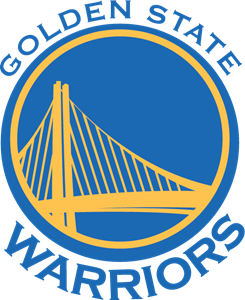

Los Golden State Warriors (en español: Guerreros del Estado Dorado) son un equipo profesional de baloncesto estadounidense con sede en San Francisco, California. Compiten en la División Pacífico de la Conferencia Oeste de la National Basketball Association (NBA) y disputan sus partidos como locales en el Chase Center, ubicado en el barrio sanfranciscano de Mission Bay.
En el verano de 2010 se produjeron varios cambios en la franquicia californiana. En junio los Golden State Warriors renovaron su logo y uniformes, regresando a los clásicos colores azul y dorado. Y en julio Chris Cohan vendió el equipo a los empresarios Joe Lacob y Peter Guber por 450 millones de dólares, en ese momento la venta más cara de la historia de la NBA. En lo deportivo, Keith Smart fue nombrado nuevo entrenador en sustitución de Don Nelson. Otro movimiento destacado fue el fichaje de David Lee, que llegó a la Bahía a través de un sign-and-trade con los New York Knicks. El ala-pívot firmó por seis años y 80 millones de dólares. Los Warriors volvieron a fracasar en su intento de regresar a Playoffs en la temporada 2010-11 y Smart fue despedido al término de la campaña regular. Su sustituto fue Mark Jackson.
La franquicia fue fundada en Filadelfia en 1946 con el nombre de Philadelphia Warriors. A principios de la década de 1960 el equipo se mudó al área de la Bahía de San Francisco, donde adoptó el nombre con el que se le conoce en la actualidad. Golden State (Estado Dorado) es el sobrenombre con el que se conoce a California por sus doradas colinas y por la Fiebre del Oro de 1849.
 Indice
Indice